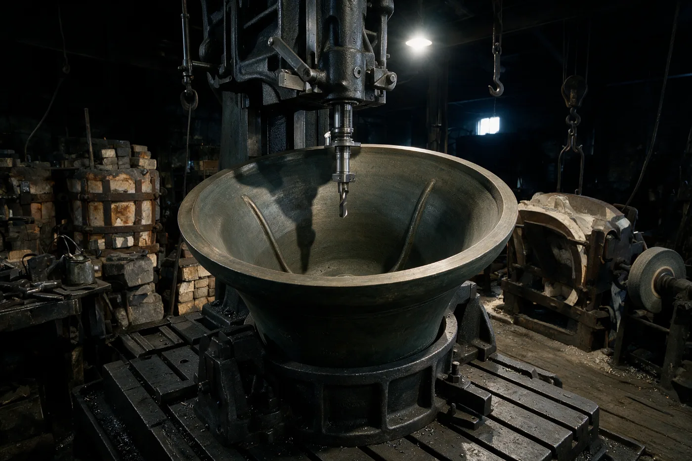

Bell tuning and frame work, Suffolk
A tuned bell is a lighter bell
We re-tune rings of bells. Metal is cut from the inside wall at the five heights where the partials sound, until the bell agrees with itself. Nothing is added, and nothing goes back on.
A cracked bell is not a tuning job, and we will say so before we quote for anything. Three things we will not do.

Three things we will not do
Tuning is permanent, and a foundry that will take any job is a foundry that will take yours. These are the three we turn down most often.
-
01
Tune a cracked bell
A crack is not a tuning fault and cutting metal will not close it. A cracked bell is a different job and often a different firm: it is welded, re-cast, or hung dead and chimed. We will tell you which before we quote for anything.
-
02
Lift a bell on a verbal
Bells in a church are under faculty jurisdiction. Your diocese decides, not your churchwarden and not us. We are content to advise while the application is in, and to wait while it is heard. That wait is normal and we plan around it.
-
03
Quote from a photograph
Weights and notes are matters of record and we will look them up ourselves. The frame, the fittings and the state of the headstocks need somebody standing in the tower, and that somebody is us.
One bell, five notes, five heights
Crown at the top, lip at the bottom- Humthe crown
- Primethe upper waist
- Tiercethe lower waist
- Quintabove the soundbow
- Nominalthe lip
A bell does not sound one note. It sounds five that matter: the hum, the prime, the tierce, the quint and the nominal. Each of them comes off a different height of the inside wall, and a bell is in tune with itself when the five stand in the right relation to one another. The trade calls that relation true-harmonic.
To move one of them you take metal away from the height it sounds from. Cut at the lip and the nominal moves. Cut at the crown and the hum moves. There is no other lever, which is why the last thing we do before the machine starts is agree exactly how much is coming off and from where.
Bell metal is roughly 78 % copper to 22 % tin. It is hard, it is brittle, and once it is off it is off.

What came off St Æthelburga's tenor
14 cwt, nominal C sharp, tuned true-harmonic in 1904. It came back on our machine in 2019. Every figure is cents away from true: nought is where the partial should sit, a minus is flat of it and a plus is sharp.
Switch the book and the bars move to where the partials finished. The pale mark stays where each one started.
Showing the 1904 figures, as the bell came in.
| Partial | Drawn to scale, flat to the left and sharp to the right | Cents | Metal off |
|---|---|---|---|
| Humcut at the crown | −31 | – | |
| Primecut at the upper waist | +18 | – | |
| Tiercecut at the lower waist | −22 | – | |
| Quintcut above the soundbow | +14 | – | |
| Nominalcut at the lip | −9 | – | |
| −40true+40 | |||
Off a bell of 1,568 lb. That is the whole price of the work in one figure, and it does not go back on.
The one we did not get
The tierce came in 22 cents flat and went out 5 cents flat, and it will stay 5 cents flat. Bringing it the rest of the way meant cutting the lower waist thinner than we are willing to leave a bell that has to keep swinging. We would rather publish the five than take the metal.
Weights and notes are matters of record: any ring in the country can be checked in Dove's Guide, and we expect ours to be. The cents are ours, taken off the bell before the tool went in and again after it came out.
Tell us about your ring
We answer these ourselves. What we need first is the tower, the number of bells and where you are with the faculty, because that last one changes what is worth doing first. We will not quote from this.